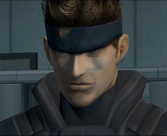
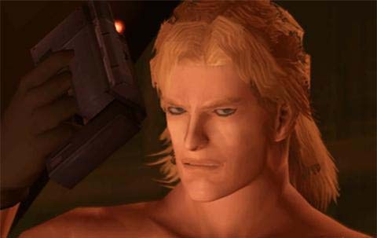
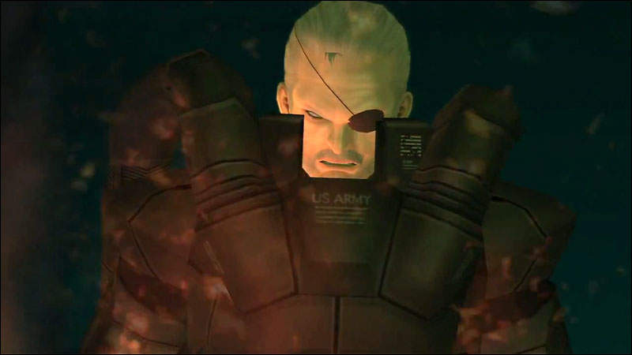
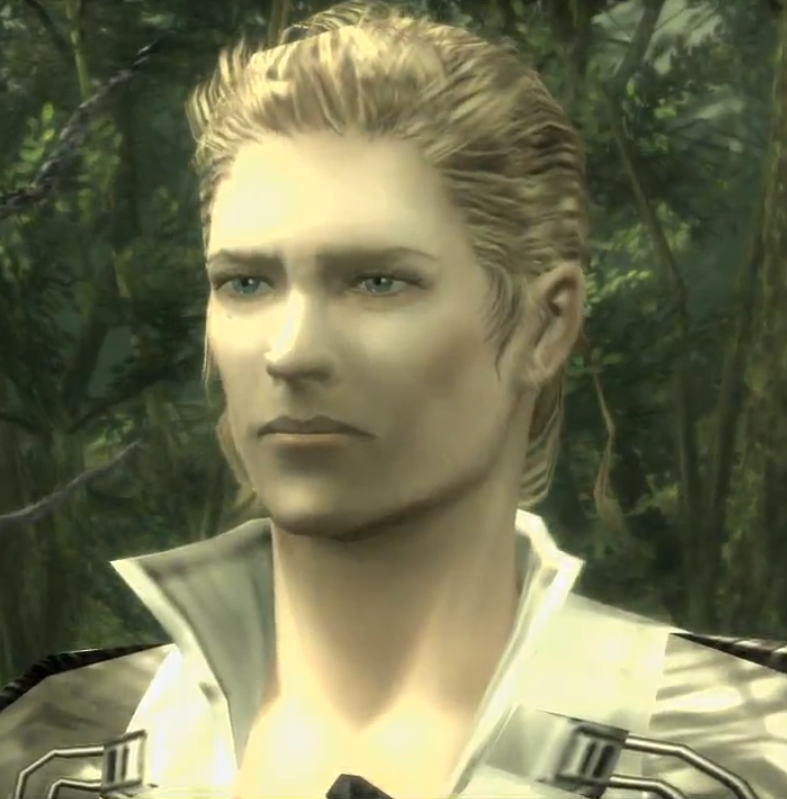
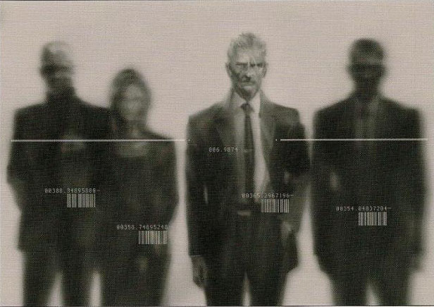

Protagonistas de la saga principal
| Nombre del personaje | Descripción | Apariciones en videojuegos |
|---|---|---|
| Solid Snake  | Solid Snake: uno de los productos del proyecto secreto Les Enfants Terribles, llevado a cabo por el gobierno de los Estados Unidos, con la finalidad de hacer prevalecer los genes del más grande soldado del siglo XX; es conocido por ser el hombre capaz de hacer que lo imposible se vuelva posible. Sus logros hicieron que se le considere una leyenda viviente en el entorno militar. |
|
Naked Snake/Big Boss  |
Además de ser aclamado por sus admiradores como un héroe de guerra, es considerado por muchos como el más grande soldado del siglo XX y un brillante líder militar. Fundó FOXHOUND, Militaires Sans Frontières, Diamond Dogs, Outer Heaven y Zanzibar Land. Los hechos que acontecieron y de los que a su vez formó parte durante una de sus misiones, harán que se cuestione muchas de las cosas en las que cree y más adelante determinarán su mentalidad y acciones posteriores |
|
Raiden  |
A pesar de su carencia de experiencia militar en campo, es enviado a una misión (durante la cual se develarán muchas cosas de su pasado que él mismo no recordaba) para detener a un grupo terrorista que amenaza la seguridad de los EE.UU. Él deberá entonces hacer su mejor esfuerzo para evitar que los terroristas cumplan sus objetivos. Salva la vida de Solid Snake en varias ocasiones. Años más tarde, su cuerpo es destruido en una batalla, y reemplazado por un cuerpo cyborg, similar al de Gray Fox. |
|
Antagonistas principales
Metal Gear Solid tiene un muy variado plantel de enemigos y jefes, he recopilado los de mayor importancia
| Nombre del personaje | Descripción | Juegos en los que aparece |
|---|---|---|
| Liquid Snake | Liquid Snake (1972-2005), de nombre real Eli, y también conocido como Nyoka ya Mpembe, Mamba Blanca, Master Miller y más comúnmente como Liquid fue uno de Les Enfants Terribles, clon de Big Boss y hermano de Solid Snake y Solidus Snake. Fue el primer hijo de Big Boss junto a su gemelo Solid, además de ser el recipiente de los genes dominantes de su padre.. |
|
| Solidus Snake  | Solidus Snake (1972-2009), de nombre real George Sears, y también conocido como King, o simplemente Solidus, era uno de los tres “hijos de Big Boss”, creados como parte del proyecto "Les Enfants Terribles". En el proyecto, uno de los hijos llevaría los genes "dominantes" de Big Boss (Solid Snake), y el otro llevaría los genes "recesivos" (Liquid Snake), y el tercero sería un equilibrio perfecto entre los genes dominantes y recesivos (Solidus). "Solidus” significa “ni sólido ni líquido” que viene definido porque Solidus era el equilibrio perfecto de sus dos hermanos. |
|
| The Boss  | The Boss (1922 - 1964), anteriormente conocida como The Joy, y también conocida como Voyevoda, Madre de las Fuerzas Especiales Lóbulo Izquierdo, y Mercury Lady fue la fundadora y líder de la Unidad Cobra, una heroína de la Segunda Guerra Mundial, cocreadora del CQC la primera humana y mujer en el espacio, cofundadora de la Unidad FOX, y mentora del mejor soldado del siglo XX, Big Boss. Una soldado legendaria, y considerada por muchos de sus compatriotas como la madre de las fuerzas especiales norteamericanas. Sus ideales de un mundo sin fronteras ni conflictos influenciaron a muchas personas. A pesar de que aparece muy poco tiempo de forma física los ideales y la muerte de The Boss desencadenarían, directa o indirectamente todos los hechos futuros de la saga Metal Gear (desde Metal Gear Solid: Portable Ops, en 1970, hasta Metal Gear Rising: Revengeance, en 2018). |
|
| Los Patriots  | Cipher, posteriormente conocida como Los Patriots, y apodados como La Li Lu Le Lo, fue una organización secreta cuyo único propósito era crear un mundo unido y sin fronteras, como The Boss quería, y posteriormente trató de controlar el mundo mediante Inteligencias Artificiales. Fueron los herederos directos de los Filósofos, que incluía miembros de China, la Unión Soviética y Estados Unidos.La sede de Los Filósofos en Estados Unidos fue renombrada a Cipher en 1970, cuando Zero reclutó a Ocelot, Big Boss, Para-Medic, Sigint y más tarde a EVA. |
|